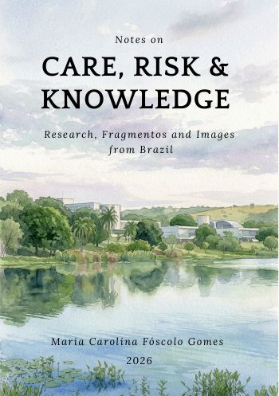

Publicar é criar permanência
A Fóscolo & Company Editora é uma casa editorial independente dedicada à publicação, preservação e circulação de conhecimento.
Nascemos da convicção de que livros, pesquisas, memórias e experiências humanas adquirem novas possibilidades de existência quando encontram formas duradouras de registro, organização e compartilhamento.
Atuamos na interseção entre história, memória, patrimônio, saúde, cultura e divulgação do conhecimento, desenvolvendo projetos editoriais comprometidos com rigor intelectual, relevância pública e permanência cultural.
O que publicamos
Nosso catálogo é dedicado a projetos que combinam rigor intelectual, relevância social e compromisso com a construção de conhecimento público.
Publicação inaugural
O catálogo da Fóscolo & Company começa com uma obra dedicada à pesquisa, à memória, ao cuidado, ao risco e à circulação internacional do conhecimento.

Primeiro livro publicado pela Fóscolo & Company Editora, Notes on Care, Risk and Knowledge inaugura uma linha editorial dedicada à pesquisa, à memória, às imagens e às formas públicas de escrita intelectual.
A obra está disponível na Amazon em edições digitais e impressas.
Projetos editoriais
Desenvolvemos iniciativas de publicação, história oral, memória institucional, organização de acervos, edição de obras acadêmicas, e-books e divulgação científica.
A Fóscolo & Company atua com projetos que transformam pesquisa, documentação e memória em publicações cuidadas, acessíveis e duradouras.
Ver projetos
Algumas histórias não devem desaparecer
Nem toda experiência se transforma em memória. Nem toda memória encontra um arquivo. Nem todo arquivo encontra leitores.
Acreditamos que o trabalho editorial existe para construir essas pontes.
Ler manifesto
Catálogo em desenvolvimento
A Fóscolo & Company organiza seu catálogo a partir de linhas editoriais dedicadas à memória, à história, ao patrimônio cultural, à saúde e às humanidades.
Vamos conversar
Para propostas editoriais, parcerias institucionais, projetos de memória, publicações e informações gerais.